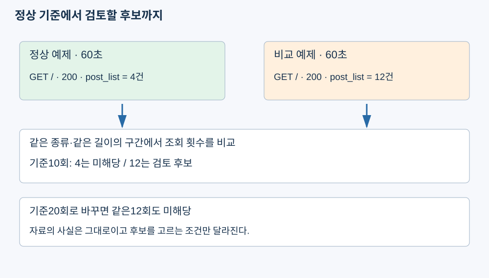

앱과 Nginx의 원본이 한곳에 모였지만 모양은 아직 다르다. 먼저 앱 기록을 공통 항목으로 바꾸는 함수를 완성하자. 이번 시간에 확인할 흐름이다.

- 실제 앱 로그를 변환하는 파일 하나를 완성한다.
- 출처와 숫자 상태를 확인하고, 새로 연 경로가 실행 결과에 추가되는지 본다.
mini-watch-m5d3
└─ monitor/backend/learning/
├─ log_data.py 준비된 원본 읽기
└─ normalize_app.py 이번에 완성1단계. 변환할 항목 정하기
정규화는 서로 다른 원본을 같은 항목과 값의 형식으로 맞추는 일이다. 예를 들어 앱의 상태 값과 Nginx 줄에서 꺼낸 상태를 모두 status_code라는 정수로 두면 같은 조건으로 비교할 수 있다.
| 공통 항목 | 앱에서 넣을 값 | 필요한 이유 |
|---|---|---|
| source | app | 어느 프로그램의 기록인지 구분 |
| method | 원본 method | GET·POST 구분 |
| path | 원본 path | 요청한 위치 확인 |
| status_code | 원본 상태를 int로 변환 | 숫자로 오류 조건 비교 |
| id / raw | 행 구분 이름 / 원본 객체 | 화면 행 구분 / 원본 대조 |
id는 app-1처럼 이 목록의 행을 구분할 이름이다. 여러 장비의 기록이 같은 요청인지 증명하는 번호가 아니다. 원본에 없는 계정·시각은 만들어 넣지 않는다. 한 행만 놓고 변환 전후를 먼저 비교하자. 아래는 입력과 결과의 미리보기이며 파일에 따로 저장하지 않는다. 입력 원본 한 행
{"method": "GET", "path": "/training-missing", "status_code": 404}이 원본을 첫 행으로 변환한 결과
{
"id": "app-1",
"source": "app",
"method": "GET",
"path": "/training-missing",
"status_code": 404,
"raw": {"method": "GET", "path": "/training-missing", "status_code": 404}
}경로와 404는 그대로다. 어느 출처인지, 원본이 무엇인지를 함께 담은 것이 변화다.
2단계. 앱 변환 함수를 완성하기
전체 파일을 바꾸고 실행하자
다른 이름으로 clone했다면 아래 파일 열기와 모든 cd 명령의 mini-watch-m5d3를 실제 폴더명으로 바꾼다. 분석 파일 바꾸기
- VS Code에서
C:\work\mini-watch-m5d3폴더를 열고monitor/backend/learning/normalize_app.py을 선택한다. - 파일 내용을 아래 전체 코드로 바꾸고 Ctrl+S로 저장한다.
monitor/backend/learning/normalize_app.py — 파일 전체
def normalize_app(event, number):
return {
"id": f"app-{number}",
"source": "app",
"method": event["method"],
"path": event["path"],
"status_code": int(event["status_code"]),
"raw": event,
}
if __name__ == "__main__":
from learning.log_data import read_logs
logs = read_logs()
if not logs["app"]:
print("앱 원본이 없습니다. 일반 게시판에서 로그인하거나 목록을 열어 보세요.")
for number, raw in enumerate(logs["app"], start=1):
event = normalize_app(raw, number)
print(event["source"], event["method"], event["path"], event["status_code"])event는 원본 한 개, number는 그 원본의 순서다. 딕셔너리의 값을 읽어 새 딕셔너리로 돌려주되 raw에는 원본을 그대로 보관한다. int는 값을 정수로 바꾸는 Python 기본 함수다. 파일 아래의 if __name__부터는 준비된 실행 확인부다. read_logs로 현재 로그를 읽고 enumerate로 1부터 순서를 붙여 함수를 호출한다. 오늘 바꾸는 핵심은 위 normalize_app의 반환값이다. VS Code의 터미널 → 새 터미널에서 + 옆 화살표 → Command Prompt를 선택하고 실행하자. 프로젝트 폴더의 Windows CMD
cd /d C:\work\mini-watch-m5d3
docker compose -f compose-monitor.yaml exec -T monitor-api python -m learning.normalize_appapp GET /training-missing 404출력 예시 중 목표 경로에 해당하는 한 줄이다. 내 화면에는 로그인·스타일 요청 등 다른 행도 함께 나온다. 파일을 저장하면 연결된 컨테이너에서도 같은 코드를 읽으므로 이미지를 다시 빌드하지 않는다.
원본과 결과를 대조하자
변환 결과 읽기
- 감시 화면에서 원본 로그 불러오기를 누르고 앱 원본의 /training-missing을 찾는다.
- 터미널 결과의 같은 경로에서 GET과 404가 유지되고 앞에 app이 붙었는지 비교한다.
정규화는 원래 오류를 정상으로 고치는 작업이 아니다. 404를 유지한 채 읽는 모양을 통일한다.
3단계. 새 요청으로 변환을 다시 확인하기
내가 정한 경로가 추가되는지 보자
새 입력으로 다시 실행하기
- 일반 게시판 탭에서 http://localhost:8081/app-check을 연다. 없는 주소이므로 404 화면이 나온다.
- 아래 명령을 다시 실행하고 app GET /app-check 404를 찾는다.
프로젝트 폴더의 Windows CMD
cd /d C:\work\mini-watch-m5d3
docker compose -f compose-monitor.yaml exec -T monitor-api python -m learning.normalize_app새 경로가 나타나면 고정 예제만 변환한 것이 아니라 현재 로그를 다시 읽은 것이다. 아직 Nginx 변환과 통합 집계는 만들지 않았으므로 감시 화면의 통합 표는 완성 안내 상태로 남는다.
상태 항목 이름을 잘못 적으면
원본에는 status_code가 있는데 event["status"]로 읽으면 다음 오류가 난다. 실행 파일에서는 올바른 status_code를 유지한다. 의도된 오류 — 잘못된 키를 읽는 독립 예시
event = {"method": "GET", "path": "/app-check", "status_code": 404}
print(event["status"])KeyError: 'status'KeyError는 딕셔너리에 그 이름의 항목이 없다는 뜻이다. 원본 키와 코드의 철자를 대조한다.
확인문제
확인문제 1. 정규화가 해결하는 문제는 무엇인가?
정답과 해설
원본마다 다른 항목 이름과 값의 형식을 공통 구조로 맞춰 같은 코드로 읽게 한다.
확인문제 2. source에 app을 추가하는 이유는 무엇인가?
정답과 해설
변환 뒤에도 앱에서 온 기록임을 알기 위해서다. Nginx 기록과 구분한다.
확인문제 3. event["path"]는 무엇을 읽는가?
정답과 해설
현재 원본 객체에 들어 있는 요청 경로를 읽는다. 새 경로를 임의로 만들지 않는다.
확인문제 4. int로 상태를 바꾸는 이유는 무엇인가?
정답과 해설
상태를 숫자로 통일해 400 이상인지 같은 숫자 조건으로 비교하기 위해서다.
확인문제 5. raw에는 무엇을 보관하는가?
정답과 해설
변환 전 앱 객체를 보관한다. 결과가 이상하면 원본 값과 대조할 수 있다.
확인문제 6. app-1은 동일 요청을 두 서버에서 연결하는 식별자인가?
정답과 해설
아니다. 이 목록에서 앱 원본 첫 행을 구분하는 이름이다. 요청의 동일성을 증명하지 않는다.
확인문제 7. 파일을 저장한 뒤 확인 명령은 무엇인가?
정답과 해설
프로젝트 CMD에서 docker compose -f compose-monitor.yaml exec -T monitor-api python -m learning.normalize_app을 실행한다.
확인문제 8. /app-check를 연 뒤 이전 실행 결과가 저절로 바뀌는가?
정답과 해설
아니다. 명령을 다시 실행해야 현재 파일을 읽은 새 결과가 출력된다.
확인문제 9. 404가 정규화 뒤 200으로 바뀌어야 하는가?
정답과 해설
아니다. 원본 404를 유지한다. 정규화는 응답 결과를 바꾸는 작업이 아니다.
확인문제 10. KeyError: status가 나오면 무엇을 비교하는가?
정답과 해설
원본 키와 코드의 키를 비교한다. 이 원본의 정확한 이름은 status_code이다.
앱 원본은 공통 항목으로 읽을 수 있다. 다음에는 항목 이름 없이 한 줄로 적힌 Nginx 기록에서 같은 값을 꺼낸다.